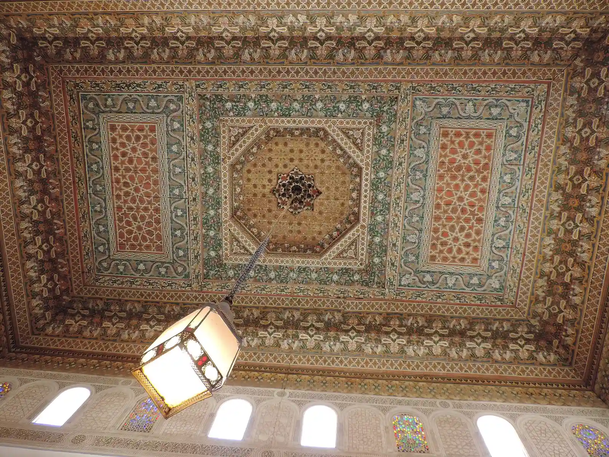

Marrakech monument tickets, and when a sight is shut
Buy Bahia, El Badi and Saadian Tombs tickets on the culture ministry shop, see the foreign-adult price and the hours, and know what to do if a door is shut or the garden is full.
A foreign adult pays 100 MAD Source-checked 25 Oct 2026 Sources at Bahia Palace, El Badi or the Saadian Tombs. A foreign child pays 50 MAD, from 7 to 13 Source-checked 25 Oct 2026 Sources.
Buy each one on its own page at e-services.minculture.gov.ma, and read the address bar before you pay.
Hours on that shop are 9h-17h Source-checked 25 Oct 2026 Sources, and no last-entry time is given.
Moroccans pay nothing on Friday, or on the first day of a religious or national holiday Source-checked 25 Oct 2026 Sources. The terms page gives reduced-mobility visitors free entry and names no day. On the English page, that line is tied to Friday, so read the terms page before you rely on it Source-checked 25 Oct 2026 Sources.
The Ben Youssef madrasa is not on this shop Source-checked 25 Oct 2026 Sources. The madrasa page on this shop is the Marinid madrasa in Salé, at 80 MAD for a foreign adult Source-checked 25 Oct 2026 Sources.
If a door here is shut, buy another monument on the same list. If the garden is full, use Jardin Majorelle tickets or the sold-out plan.
Last updated 25 Oct 2026.
Written by Omar Oujoud in Casablanca. Research drafting is AI-assisted; observations are recorded in person. How we check
Jump to what’s still being checked · sources
How we checked
The four prices were read on the French and English buying pages for Bahia, El Badi, the Saadian Tombs and the Almoravid Koubba. The same four categories are on each page. The footer, in both languages, names the Ministère de la Jeunesse, de la Culture et des Sports Source-checked 25 Oct 2026 Sources.
The terms pages keep one French text on both language addresses. It points to order 834.18 of 22 March 2018, as later amended Source-checked 25 Oct 2026 Sources and does not give the dirham table. That text uses two sentences: one for reduced mobility, with no day, and one for Moroccan visitors on Friday and the first holiday day. The French buying screen only repeats the Moroccan sentence. The English buying screen puts reduced mobility into the Friday sentence, so it can be read more narrowly. Use the two sentences on the terms page.
The same hours line sits in the footer of the buying pages, the ticket index, the terms pages and the download page. It is one shared line, not a timetable written out for each monument. Ramadan is not mentioned.
Buy now opens a box that asks for an email. It does not ask you to sign in. The email was not sent.
The Ben Youssef madrasa is absent from both language indexes. The madrasa those indexes do list is the Marinid madrasa, and its buying pages place it in Salé. The regional council’s English and French listings name Medersa Ben Youssef and give no price and no hour. Nothing here was seen at a door.

At a glance
The shop writes these prices as Dh. The figures below are the same amounts in MAD. The Almoravid Koubba is on the same shop, at the same prices, if you want another door nearby.
| Detail | Foreign adult | Foreign child | Moroccan or resident adult | Moroccan or resident child | Hours |
|---|---|---|---|---|---|
| Bahia Palace | 100 MAD Source-checked 25 Oct 2026 Sources | 50 MAD, from 7 to 13 Source-checked 25 Oct 2026 Sources | 30 MAD Source-checked 25 Oct 2026 Sources | 10 MAD, from 7 to 13 Source-checked 25 Oct 2026 Sources | 9h-17h Source-checked 25 Oct 2026 Sources |
| El Badi | 100 MAD Source-checked 25 Oct 2026 Sources | 50 MAD, from 7 to 13 Source-checked 25 Oct 2026 Sources | 30 MAD Source-checked 25 Oct 2026 Sources | 10 MAD, from 7 to 13 Source-checked 25 Oct 2026 Sources | 9h-17h Source-checked 25 Oct 2026 Sources |
| Saadian Tombs | 100 MAD Source-checked 25 Oct 2026 Sources | 50 MAD, from 7 to 13 Source-checked 25 Oct 2026 Sources | 30 MAD Source-checked 25 Oct 2026 Sources | 10 MAD, from 7 to 13 Source-checked 25 Oct 2026 Sources | 9h-17h Source-checked 25 Oct 2026 Sources |
| Almoravid Koubba | 100 MAD Source-checked 25 Oct 2026 Sources | 50 MAD, from 7 to 13 Source-checked 25 Oct 2026 Sources | 30 MAD Source-checked 25 Oct 2026 Sources | 10 MAD, from 7 to 13 Source-checked 25 Oct 2026 Sources | 9h-17h Source-checked 25 Oct 2026 Sources |
| Ben Youssef madrasa | Not yet confirmed | Not yet confirmed | Not yet confirmed | Not yet confirmed | Not yet confirmed |
The shop also sells a madrasa. That page is the Marinid madrasa in Salé Source-checked 25 Oct 2026 Sources. A foreign adult there is 80 MAD Source-checked 25 Oct 2026 Sources, and a foreign child is 40 MAD, from 7 to 13 Source-checked 25 Oct 2026 Sources. It is not Ben Youssef.
Step by step
Our advice: open the monument’s own page, then read the address bar. It should show e-services.minculture.gov.ma. A different site using the same place name is not this shop.
- Bahia Palace. French page: Palais El Bahia. English page: The Bahia Palace.
- El Badi. The shop spells it Badii. French page: Palais Badii. English page: The Badii Palace.
- Saadian Tombs. Both languages use one title. French page: Tombeaux Saadiens. English page: Tombeaux Saadiens.
- Choose the row that fits you. A foreign adult is 100 MAD Source-checked 25 Oct 2026 Sources. A foreign child is 50 MAD, from 7 to 13 Source-checked 25 Oct 2026 Sources. A Moroccan or resident adult is 30 MAD Source-checked 25 Oct 2026 Sources. A Moroccan or resident child is 10 MAD, from 7 to 13 Source-checked 25 Oct 2026 Sources.
- Press the buy button. A box opens and asks for an email, in French on the English page too. The label reads Email notification. Source-checked 25 Oct 2026 Sources This guide did not send that email, so it does not describe a date list or a card form.
- If you do pay, keep the email and the number the shop gives you. To download the ticket later, the page asks for that email and a number. The number field is labelled as a payment number. Source-checked 25 Oct 2026 Sources French page: Téléchargez votre ticket. English page: Download your ticket. The instructions stay in French on the English page.
Our advice: save the confirmation somewhere it opens without mobile data. Lanes in the medina often have a weak signal.
The edge case
Moroccans pay nothing on Friday, or on the first day of a religious or national holiday Source-checked 25 Oct 2026 Sources. The terms page gives reduced-mobility visitors free entry and names no day. On the English page, that line is tied to Friday, so read the terms page before you rely on it Source-checked 25 Oct 2026 Sources. That text is French on both the French terms page and the English terms page.
Friday is not listed as a closure. It is a day Moroccan visitors pay nothing. If you need the reduced-mobility exemption, read the terms page, where that exemption is its own sentence.
Ramadan is not mentioned. Before a visit in Ramadan, open the monument’s page again. Do not treat 9h-17h Source-checked 25 Oct 2026 Sources as a Ramadan clock.
You will not see a calendar until after the email box, so a sold-out day is not described here. If the shop will not finish the sale, or you arrive and the door is shut, the other places on this list use the same prices. The Almoravid Koubba is the extra one: Coupole Almoravides and The Almoravid Koubba.
Jardin Majorelle uses a different ticket, on the garden’s own shop. Hours and the way to buy are in Jardin Majorelle: tickets and hours. If that hour is already gone, use If Jardin Majorelle is sold out.
Bahia, El Badi, the Saadian Tombs and the Almoravid Koubba each have a Pass Jeunes row at 0 MAD Source-checked 25 Oct 2026 Sources. Both languages say holders go in free. The pages do not say who can hold the pass.
Our advice: pay this shop, rather than someone at the gate offering a ticket the shop did not sell. If this door is shut, choose another monument on the list, or switch to the garden guides above.
What to watch for
- The address bar. These prices come from e-services.minculture.gov.ma. A page with a similar name is a different seller.
- The shop’s spelling. El Badi is Badii there. An English spelling in a search box can send you somewhere else.
- A Friday you thought was a closure. The shop does not call Friday a shutdown. It names a day when Moroccan visitors pay nothing.
- Two sentences, or one. Reduced mobility and Friday sit together on the English buying screen. The terms page keeps them apart.
- The madrasa on this shop. It is the Marinid madrasa in Salé, at 80 MAD for a foreign adult Source-checked 25 Oct 2026 Sources. Ben Youssef is not on this shop Source-checked 25 Oct 2026 Sources, and its price and hours are Not yet confirmed.
- A foreign-adult price other than the table. On these Marrakech pages it is 100 MAD Source-checked 25 Oct 2026 Sources. 80 MAD Source-checked 25 Oct 2026 Sources is the Salé madrasa, not Bahia, El Badi or the tombs.
Still being checked
Not yet confirmed, so not stated as fact on this page:
- The Ben Youssef madrasa: the price, the hours, and where a ticket is sold.
- Whether the door sells the same ticket, and whether it takes cash or a card.
- What you have to show to be charged the resident price rather than the foreign price.
- Which cards the shop accepts. The footer shows a picture of cards and does not name them in the text.
- What comes after the email box: a date, a time slot, or a message that the day is full.
- Whether 9h-17h Source-checked 25 Oct 2026 Sources changes in Ramadan, on a holiday, or later on Friday.
- A last entry time. The footer does not give one.
- A price for a child younger than the from 7 to 13 Source-checked 25 Oct 2026 Sources row.
- A group price. The screen shows an individual choice only.
- Who can hold Pass Jeunes. The row is 0 MAD Source-checked 25 Oct 2026 Sources on these four pages, and the pages do not say who qualifies.
- Whether reduced-mobility entry is free on every day the door is open. The terms page names no day. The English buying line can be read as Friday only.
Next on your route.
Each guide covers one step of the journey.
Sources for this page
Every fact on this page shows when it was checked and links here to its source. What the badges mean.
- Ministry shop prices for four Marrakech monuments: E Services, E Services, page 2, E Services, page 3, E Services, page 4, E Services, page 5, E Services, page 6, E Services, page 7, E Services, page 8. Reviewed 25 Oct 2026.
- Visiting-hours line on the ministry ticket shop: E Services, E Services, page 2, E Services, page 3, E Services, page 4, E Services, page 5, E Services, page 6, E Services, page 7, E Services, page 8, E Services, page 9, E Services, page 10, E Services, page 11, E Services, page 12, E Services, page 13, E Services, page 14. Reviewed 25 Oct 2026.
- Who the ministry terms page exempts from entry fees: E Services, E Services, page 2, E Services, page 3, E Services, page 4, E Services, page 5, E Services, page 6, E Services, page 7, E Services, page 8, E Services, page 9, E Services, page 10. Reviewed 25 Oct 2026.
- Ben Youssef madrasa on the ministry index and the council listing: E Services, E Services, page 2, Visit Marrakech, Visit Marrakech, page 2. Reviewed 25 Oct 2026.
- Marinid madrasa on the ministry shop is in Salé: E Services, E Services, page 2, E Services, page 3, E Services, page 4. Reviewed 25 Oct 2026.
- Buying and downloading a ministry monument ticket: E Services, E Services, page 2, E Services, page 3, E Services, page 4, E Services, page 5, E Services, page 6, E Services, page 7, E Services, page 8, E Services, page 9, E Services, page 10. Reviewed 25 Oct 2026.
- Pass Jeunes row on four Marrakech monument pages: E Services, E Services, page 2, E Services, page 3, E Services, page 4, E Services, page 5, E Services, page 6, E Services, page 7, E Services, page 8. Reviewed 25 Oct 2026.